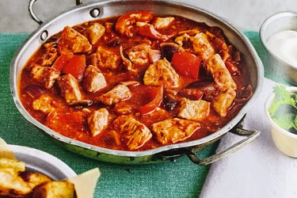

Chicken Dopiaza with Cumin Roast potatoes 45 4
- Chicken500g
- Red Onions2.5
- Potatoes700g
- Garlic cloves4
- Root ginger2.5 cm
- Red Chilli1
- Garam Masala1 tbsp
- Ground cumin2.5 tsp
- Ground coriander1 tsp
- Chopped tomatoes1 tin
- Chicken stock cube1
- Red pepper1
- Fresh coriander1 tbsp